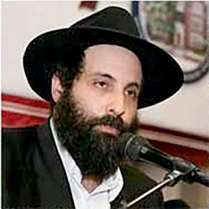

60 שנה של חיים בנס
60 שנה של חיים בנס
60 שנה של חיים בנס

לגיבור סיפורנו נקרא דן. כאשר הוא נכנס בשערי הישיבה הגדולה של חב”ד בלונדון וביקש ממשפיע הישיבה, הרה”ח ר’ מענדל גורדון, ללמדו תניא - קיבלו הרב גורדון במאור פנים, ולאחר שסיים אי–אלו סידורים דחופים, התיישב עם דן האורח ללמוד עמו תניא. בקשתו של אדם - כבודו.
בתום השיעור, שהיה מוצלח, שאל הרב גורדון את דן, מדוע החליט פתאום ללמוד תניא? הוא נראה בשנות השישים לחייו, ולא כאחד הצעירים המחפשים דרכים חדשות בחייהם.
עיניו של דן הצטמצמו בריכוז עמוק, כמו מנסה לדלות זיכרון חשוב על שלל פרטיו. הוא ניגש אל המיחם הרותח שעמד פינת החדר, שפת לעצמו כוס תה חם, וכשהתיישב, החל לספר.
•
משה, אביו של דן, הצליח לשרוד את כל מסכת מדורי הגיהנום שהועידו לו הנאצים ימ”ש בתקופת השואה האיומה באירופה. הוא שרד חמש שנים של תופת פיזי ונפשי במהלכן התנסה בכל הזוועות והייסורים, כולל כליאה במחנות עבודה ומוות. רחמי שמים התגלגלו עליו, ליווהו בכל אשר הלך, ובניסים גדולים שרד את התופת.
עם תום מלחמת העולם השניה ושחרור המחנות, היגר משה לאנגליה, שם פגש במרוצת הימים נערה יהודיה ממוצא אנגלי. השניים נשאו חן זה בעיני זו, נישאו והקימו משפחה.
היה זה חודשים אחדים אחרי לידת בנם הבכור, דן. המשפחה הצעירה החלה להניץ וללבלב בעם היהודי, ורק אז החל משה להרגיש את מלוא כובד התלאות שעברו עליו. כאילו חש דווקא עתה, כאשר הגיע אל המנוחה והנחלה, כי הוא יכול להרפות ולתת לזוועות ההם להיכנס אל תוך נפשו. עד אז הגיף את דלתות הנפש ושמר עליהן בקנאה רבה, לבל יחלחלו הזכרונות פנימה.
והם אכן נכנסו עמוק ללבו, אוהו נכנסו, הציפו אותו עד תום וחוללו בנפשו הרס ושמות. תמונות ומראות קשים הציפו את זכרונו והבעיתו אותו ללא רחם. הימים הפכו לסיוט מתמשך ובלילות היה מתעורר בבעתה נוכח הזוועות שראה בעיניו. משה חווה משבר נפשי קשה מאד, עד כדי כך, שבנו הבכור דן, ראה את אביו אך בקושי בחמש שנותיו הראשונות. רק לעתים נדירות היה משתחרר מאשפוז ממושך בבתי רפואה למוכי–נפש.
המצב היה קורע לב, במיוחד עבור רעייתו הצעירה שבסך הכל ביקשה להקים ולבנות משפחה נעימה ואוהבת. שוד ושבר.
תקופה ממושכת, בלתי–נודעת, חלפה. באחד הימים קיבלה רעייתו מכתב רשמי מבית הרפואה. הרופאים הזמינו אותה לפגישת ייעוץ וקבלת החלטות.
היא הניחה את בנה דן בידיים טובות, ויצאה לבית הרפואה, שם כבר המתין לה צוות בכיר. בפנים חמורות סבר הודיעו לה כי עד כה השקיעו מאמצים רבים לרפא את בעלה, אולם לצערם הגדול, לא נשארו להם עוד כלים כדי להיטיב את מצבו. “בעלך אינו מסוגל להתמודד עם זכרונותיו הקשים. בכל פעם שהם עולים, הם שוברים את נפשו לרסיסים ומשבשים את מוחו”.
“אם כן, מה אתם מציעים לי לעשות?” שאלה אשתו.
אחד הרופאים כחכח בגרונו. ניכר כי הוא מהסס איך לומר את המילים הנכונות. “יש אפשרות אולי”, נזהר במילותיו, “לנתח את מוחו בניסיון לנתק את חלק המוח שאחראי על הזכרון. ייתכן ובפעולה כירורגית זו, לא יעלו לו יותר זכרונות משנות הזוועה, ואז גם אם יהיה חסר זכרונות מהעבר, לטוב ולרע, אבל לפחות יצליח לחיות כאחד האדם”.
הרעיה פקחה זוג עיניים נדהמות, בעוד הרופא המשיך: “מצד שני, מדובר בניתוח מסוכן מאוד, ויש סיכוי שאיזמל המנתחים יפגע גם בחלקים אחרים במוח שישתקו אותו, ואולי אף יישאר ‘צמח’ עד סוף ימיו. אך אם לא נעשה את הניתוח - הסיכוי שהוא ישוב אי–פעם לשפיות ולחיים תקינים - אפסי.
“אם תרצי שננתח את בעלך, עלייך לחתום ולאשר את הסכמתך לניתוח והסיכונים הנלווים מכך”.
“אמי” - המשיך דן לספר - “מוצאה את עצמה לפותה בין הפטיש והסדן; בין להיות רעייתו של אדם שחי את שנות חייו באשפוז קשה ובמצב נפשי חשוך מרפא, לבין ניתוח בסיכון גבוה שתוצאותיו מי ישור.
“נוכח החלטה כה קשה, אמא חשה אבודה. לא היה לה עם מי לחלוק את רגשותיה, שלא לדבר על שיקול דעת בעניין כה גורלי.
“לאבא היה חבר קרוב, ישראל רוזינסקי, שאף הוא עבר אתו את ימי האימה. הזוועות שעברו יחד בשנים ההן, גיבשו את השניים לכלל חברות אמיצה ונאמנה. אמא ניגשה אליו אפוא וביקשה ממנו עצה הגונה, כיצד לפעול ובמה לבחור. ישראל פקח עיניים משתאות. הוא הסביר לאמא כי הוא לא האיש המתאים לענות על שאלה כה קשה. ‘שאלה גורלית כזו צריכים להפנות לרבנים דגולים’, אמר לה. ‘הם אשר יפסקו’.
“אם כן, מה עלי לעשות?” תהתה אמא.
“הניחי לי לטפל בכך”, אמר ישראל הידיד.
הוא נטל על עצמו את התפקיד והאחריות לקבלת דעת תורה. הוא התיישב בביתו וכתב עשרים ושלושה מכתבים לגדולי הדור בעת ההיא. באותם ימים טרם היה מכשיר הצילום או המחשב שיכול היה להנפיק עשרים ושלושה מכתבים בלחיצת כפתור. כל מכתב נכתב בנפרד מחדש, או שהוא נכתב בנייר פחם שהעתיק את הדברים פעמים אחדות.
במכתב קורע–לב תיאר בפרוטרוט את מצב ידידו, את השנים הקשות שעבר בשואה, וכן את הדילמה שהעמידו הרופאים בפני הרעיה. כשסיים את המכתב, חתם בשמה ושיגרו לעשרים ושלושה גדולי ישראל מסביב לעולם, כאשר הוא מבקש את עצתם.
מתוך עשרים ושלשה מכתבים שנשלחו, התקבלה תשובה אחת בלבד - מהרבי מליובאוויטש היושב בניו יורק. הרבי מגיב במכתבו, כי קיבל מורשת מחמיו, רבי יוסף יצחק, ששמירת שלושת שיעורי חת”ת - שיעור חומש ורש”י כפי שמחולק לימים, שיעור יומי בתניא, ושיעור היומי של תהילים, יש בו כוח השפעה חיובי. ראוי אפוא שהחולה יקבל על עצמו לימוד זה, והדברים יסתדרו.
ישראל קרא את התשובה, ולמרות שהוא התייחס לתשובת הרבי ברצינות גמורה, לדעתו התשובה היתה לא הגיונית. הרי חברו הינו שבר כלי, ולא שייך כלל לדבר אתו, בוודאי לא להביא אותו לכלל לימוד. ישראל, מתוך אכפתיות עמוקה ורצון כנה לסייע, הזמין על ידי מרכזנית שיחת טלפון בינלאומית מלונדון לניו יורק, וביקש לברר דברים לאשורם. הוא הסביר למי שענה לצלצול (מזכיר הרבי) שהוראת הרבי איננה מעשית כלל, ואם כן, הוא שואל כיצד לפעול בנידון?
תשובת הרבי הייתה, שבמקרה שהחולה אינו מסוגל ללמוד חת”ת, אזי ראוי שאחד מבני המשפחה יקח על עצמו וילמד עבורו.
“אין לו אף קרוב משפחה”, הסביר ישראל למזכיר הרבי, מלבד אשתו ובן תינוק. כל השאר, הורים, אחים ואחיות, כולם - נספו בשואה האיומה. הוא לגמרי בודד בעולם.
אם זה המצב, באה התשובה, אפשר שחברו ילמד חת”ת במקומו.
הידיד הלא הוא ישראל רוזינסקי בעצמו.
ישראל השיב בחיוב, והניח את האפרכסת על כנה. הוא אכן לקח על עצמו ללמוד חת”ת, חומש, תהילים, ותניא בכל יום לזכות רפואתו השלמה של ידידו. הוא לא ידע בדיוק כיצד עושים זאת, ועל כן בירר היכן שבירר מה בדיוק צריך ללמוד.
ואכן, מאז שלקח על עצמו את המשימה, התמיד בה בעקשנות, יום אחר יום.
“ששה שבועות חלפו מאז, ומצבו הרפואי של אבא החל להשתפר בצורה משמעותית באופן ניסי. הרופאים היו נדהמים. הוא החל לגלות סימני רגיעה, ואט אט חזר לשפיות. הוא הגיב כאחד האדם ואף החל לנהל שיחות ‘רגילות’. שלושה חודשים לאחר מכן, שוחרר לביתו. אמנם אי אפשר להגדיר את אבא בעת ההיא כאדם לגמרי נורמלי, אולם עם הזמן הוא מצא עבודה לפרנסתו, נולדו לו ילדים נוספים, אחיי ואחיותיי, אותם גידל ברגישות ובתבונה, וזכה לחיות עוד שנים רבות לצדה של אמא. איש לא ידע כיצד ומדוע חלה התפנית הניסית במצבו הנפשי של אבא, ומה גרם לכך. ישראל הידיד שמר את הסוד לעצמו”.
ב
שקט שרר בחדר שעה שדן חתם פרק זה בסיפורו. השליח הרב גורדון הביט בו מרותק, מבלי להוציא הגה.
לאחר שהות קלה, הוסיף דן חלק נוסף בסיפור.
“באחרית ימיו, אבא חלה במחלה הידועה, ונשלח לאשפוז בבית רפואה בעיר גייטסהד שבאנגליה שם שכב מבלי שבאמת הרופאים יכלו לטפל בו, אלא רק להרגיע את מכאוביו ולסייע לו לעבור את התקופה האחרונה בכמה שפחות כאב.
“באחד הימים אחי הצעיר הגיע לבקר את אבא. במהלך הביקור הגיע ישראל מלונדון במפתיע כדי לבקר את חברו הטוב משכבר הימים. לשמחת שני החברים לא היה גבול.
“בשלב מסוים הבחין ישראל במצב רוחו השפוף של אחי, נוכח מצב הבריאות של אביו. כשסיים את הביקור ועמד לצאת מן החדר, סימן לאחי ללוותו החוצה. ברגעים אלה סיפר לאחי את כל הסיפור שאירע עם אביו שנים ארוכות קודם לכן - על מצבו הנפשי הקשה באותה תקופה, על הניתוח המסוכן שביקשו הרופאים לעשות, ועל עצת הרבי ללמוד חת”ת. ‘ברי לי שסגולה שמיימית זו היא שהועילה לאביך’, גילה ישראל לראשונה, ‘והעניקה לאביך עוד שנים רבות של חיים’.
“בטרם נפרדו, ישראל נטל ידו של אחי וביקשו בהבטחה גמורה שלא יספר את הסיפור הלאה. מה הסיבה? אולי משום שרצה לשמור על כבודו של אבא, אולי משום צניעותו שלא רצה לקחת קרדיט על רפואתו של ידידו, ואולי מסיבה אחרת שהייתה שמורה עמו.
“שבועות אחדים לאחר מכן, אבא נפטר, ואנחנו, ילדיו, ישבנו ‘שבעה’ יחד בבית ההורים.
“כדרך היושבים ‘שבעה’, אחים ואחיות השוהים זה במחיצתו של זה ימים ארוכים, הועלו זיכרונות ילדות רחוקים, סופרו סיפורים מן העבר, ואבק–השנים הוסר מהנשכחות. באחד הימים לא התאפק אחי, ושיתף את כולנו בסיפור המיוחד שסיפר לו ישראל - על סגולת החת”ת שהעניק הרבי מליובאוויטש והועילה לאבא במצב שבו שום דבר כבר לא יכול היה לסייע לו.
“כעת כולנו, האחים והאחיות, ידענו על הסיפור”.
ג
“שוב חלפו מספר שנים, ונודע לנו כי ישראל, חברו הטוב של אבא שעבר עמו כברת דרך כה ארוכה, בטוב ובעיקר ברע - נפטר לבית עולמו.
“כיוון שהייתה בנו הכרת הטוב עמוקה על כל מה שעשה בשביל אבא, נסענו כולנו ללונדון כדי לנחם את בניו של ישראל רוזינסקי. במהלך הביקור סיפרנו להם את הסיפור כולו כפי שנודע לנו מפי אביהם. רצינו להדגיש את האהבה והאכפתיות שהיו לו בשביל רעהו.
“היה ניכר כי בניו הופתעו לשמוע את הסיפור, אך עם זאת גם לא–הופתעו. ‘אכן, במשך כל השנים ראינו את אבא לומד חת”ת, ולעולם לא הבנו מדוע! ללמוד תניא? הרי מעולם לא נמנה על חסידי ליובאוויטש, ועם זאת, התמיד בלימוד הזה בכל יום. כעת אנו מבינים את הסיבה לכך’.
“כשישבנו שם יחד בניו של אבא ובניו של ישראל, עשינו חשבון והבנו שבמשך קרוב לשישים שנה (!!), ישראל למד חומש, תהילים ותניא כפי שמחולק לשיעורים יומיים לזכות חברו. גם לאחר שאבא חזר למצב בריאותי סביר, הוא לא פסק מלימודו; הוא חש כי הלימוד הזה מחזיק את ידידו ‘מעל פני המים’, ודאג לעשות זאת בהתמדה מעוררת השתאות.
“המעשה הזה ריגש אותי כל כך”, סיים דן את סיפורו, שבאתי כעת לכאן כדי להכיר לראשונה את ספר התניא שהציל וריפא את אבא בצורה כה ניסית”.
(את הסיפור סיפר השליח הרב מנחם מענדל גורדון, משפיע ישיבה גדולה ליובאוויטש בלונדון. תרגום מאנגלית: פ’ זרחי)